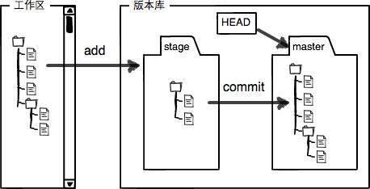
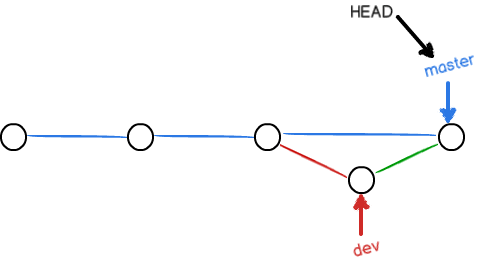
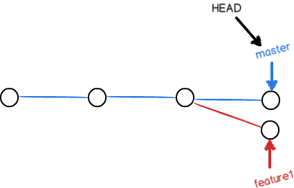
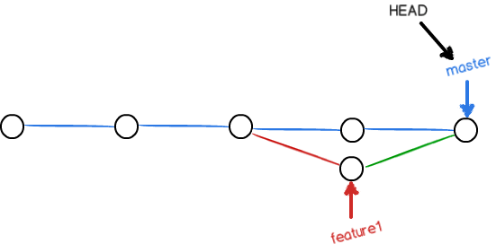

入门
创建 Git 仓库
# 将已有项目纳入 Git 管理
$ cd myproject/ && git init
# 新项目使用 Git 管理
$ git init newproject && cd newproject
创建完成后会在当前项目下自动生成 .git 目录及相关子文件。
把工作区文件提交到本地仓库（当前分支）
HEAD 指向当前分支的最新版本 
暂存区就像是购物车，看到喜欢的商品可以先加入购物车（git add），在没付款前其实你是不确定购物车里的东西都想买，如果不想要了你可以直接删除购物车里的商品（git reset），确定好后再一次性下单（git commit）; 当然，你也可能看到某个喜欢的商品就直接下单了（git commit -a），而不是先加入购物车。
$ echo "Git is a version control system." > README.md
$ git add README.md
$ git commit -m "Create README.md"
# Git 添加文件到仓库需要 add，commit 两步，可以多次 add 不同的文件或目录，commit 可以一次提交很多文件
$ git add f1.md
$ git add f2.md f3.md
$ git add dir1
$ git add dir2 dir3
$ git commit -m "Add three files and one dirctory." # 提交暂存区所有修改版本库
$ git commit [file1] [file2] ... -m [message] # 提交暂存区指定文件到版本库
关于 git add
$ git add -A # 添加所有改动，包括所有新增、修改和删除；等价于 git add --all，可以只针对目录： git add --all /dir
$ git add . # 添加所有新增和修改，但不包括删除 （会添加隐藏文件）
$ git add * # 添加所有新增和修改，但不包括删除 （不会添加隐藏文件，不建议使用）
$ git add -u # 添加所有修改和删除，但不包括新增
代码提交
# 也可以不 add，直接提交工作区自上次 commit 后的新的变化到版本仓库
$ git commit -a -m "msg" # 等价于 git add * && git commit -m "msg" （并不会添加隐藏文件）
# 使用新的提交代替上一次提交，可以用来修改上一次的提交信息
$ git commit --amend -m [message]
# 重做上一次提交，并包括指定文件的新变化
$ git commit --amend [file1] ... [fileN] -m [message]
撤销（unstage）暂存区的修改？
撤销暂存区的修改之后，暂存区默认会回到最近一次 commit 的状态
$ git reset HEAD f1.md # 可以简写成 git reset f1.md
$ git reset # 撤销所有暂存区的所有文件追踪
add 到暂存区后如何改名
$ git mv new.md old.md # 工作区也会跟着改名
add 到暂存区后如何删除？
删除暂存区中文件相当于从购物车中删除添加的商品. 另外,如果一个文件已经被提交到了版本库, 突然又不想提交到远程仓库,可以先从暂存区删除再重新提交到版本库.
# 同时删除工作区和暂存区中的 f1.md
$ git rm (-f) f1.md # 等价于 git rm (-f) f1.md && git rm --cached f1.md
# 仅删除暂存区中的 f1.md，而工作区中的 f1.md 会继续保留
# 如果删除前工作区中的 f1.md 还作了修改，则需要先丢弃工作区的修改 git checkout -- f1.md
$ git rm --cached f1.md
$ git rm -r --cached dir # 从暂存区删除某个目录
如果删错了可以再丢弃工作区的修改（git checkout -- f1.md）。
丢弃（discard）工作区的修改
工作区的文件发生修改后，要么添加（git add f1.md）到暂存区，要么丢弃（git checkout -- f1.md）工作区的修改。
情况1：f1.md 作了修改但还没有被添加到暂存区，撤销修改会回到和版本库最近一次 commit 的状态（前提是至少 commit 过一次）
情况2：f1.md 作了第一次修改后被添加到暂存区，之后又作了第二次修改，撤销修改会回到暂存区时的状态。如果想回到版本库的状态，可以指定 commit id。
总之，撤销工作区的修改会回到最近近一次git commit或git add时的状态
$ git status
$ git checkout -- f1.md # 撤销工作区某个文件的修改
$ git checkout . # 撤销工作区的所有修改
$ git checkout HEAD f1.md # 直接回到版本库状态（工作区和暂存区都会回到版本库状态）
$ git status
查看工作区以及暂存区的状态
# 查看有哪些文件被添加、删除、修改（但不能查看具体修改了什么内容）
$ git status
查看 difference
查看文本在工作区和暂存区的 difference
$ git diff # 对比所有文件 （git diff --shortstat）
$ git diff README.md # 对比某个文件
查看文本在暂存区和本地仓库的 difference
对比的是暂存区和本地仓库的最近一次 commit 的不同
$ git diff --cached # 对比所有文件（等价于 git diff --staged）
$ git diff --cached README.md # 对比某个文件
查看文本在工作区和本地仓库的 difference
$ git diff HEAD # 对比所有文件
$ git diff HEAD -- README.md # 对比某个文件
$ git diff test # 对比当前目录与 test 分支最新版本的不同，延伸： git diff master 等价于 git diff HEAD
查看文本在版本库和版本库的 difference
$ git diff HEAD^ HEAD # 比较最近一次提交 commit 和上次提交
$ git diff SHA1 SHA2 # 比较两个历史版本之间的差异
对比分支的 difference
$ git diff master dev # 对比 dev 分支和 master 分支最近一次 commit 时所有文件的不同 （dev 分支相对于 master 分支）
$ git diff master dev > master-dev.diff # 将所有 difference 输出重定向
# 输出自 dev 和 master 分别开发以来，dev 分支上的 changed
$ git diff master...dev
查看简单的 diff 结果，可以加上 --stat 参数
$ git diff --stat
$ git diff --cached --stat
...
$ git diff master...dev --stat
查看 commit 日志
# 第一列为 commit id
$ git log
$ git log --pretty=oneline # 一行显示
# 查看最新的3条 commit 日志
$ git log -3
# 建议使用 git lg 代替 git log
$ git log dev # 查看 dev 分支的 commit 日志
$ git log master dev # 查看 master 分支和 dev 分支的 commit 日志
$ git log master ^dev # 查看 master 分支有，而 dev 分支没有的 commit 日志（对应：git log dev ^master）
$ git log master..dev # 查看 dev 分支比 master 分支多提交了哪些内容（对应：git log master ^dev）
$ git log master...dev # 不确定谁提交的多谁提交的少，单纯想看看有什么不一样（等同于 git log dev...master）
$ git log --left-right master...dev # 查看每次提交都在哪个分支上（master 对应左箭头 <，dev 对应右箭头 >）
版本回退
HEAD 指向的是当前分支的最新版本，HEAD^ 指向的是当前分支的上一个版本，HEAD~10 指向的是当前分支的上 100 个版本。
# 也可以按 commit id 来回退版本
$ git reset --hard HEAD^ # 回退到上一个版本，工作区和暂存区会被重置到回退版本的状态
$ git reset --keep HEAD^ # 仅版本库回退，工作区和暂存区不变
$ git revert [commit] # 回退到指定版本，并新建一个 commit，但工作区和暂存区会被覆盖，可以先赞存本地修改（git stash）
查看 commit 日志和版本回退日志
如果版本回退之后又想回到未来，可以用该命令获取回退前的 commit id。
$ git reflog
缓存工作区和暂存区
主要会在两个地方用到 stash 功能：
- 合并分支之前，如果工作区和暂存区存在修改后并未提交的文件（不包括新增的），这时要么 commit 要么 stash；
- 当切换分支进行开发时，如果当前分支并未完成（即还没到 commit 的时候），可以先 stash 在切换分支开发。
$ git stash # 缓存
$ git stash # 列出所有缓存
$ git stash pop # 还原并删除 （== git stash apply stash@{0} && git stash drop stash@{0}）
$ git stash clear # 清除所有
上传项目到 GitHub
Git 支持 SSH 协议，本地 Git 仓库和 GitHub 仓库之间要建立加密连接需要将本地 SSH 公钥（id_rsa.pub）添加到远程 GitHub。
上传项目到 GitHub 需要3步：
第1步： 在 GitHub 中创建一个空的仓库（helloworld）。
第2步： 添加远程库origin，origin 是 Git 默认的叫法，也可以取别的名字。
$ git remote add origin git@github.com:jinsyin/helloworld.git
第3步： 把本地仓库的所有内容推送到远程库。实际上是把当前master分支推送到远程。
对于参数-u，Git 不但会把本地的master分支内容推送到远程新的master分支，还会把本地的master分支和远程的master分支关联起来，在以后的推送或者拉取时可以简化命令。之后再提交不用再加-u（git push origin master）
$ git push -u origin master # 推送 master 分支
$ git push -u origin dev # 推送 dev 分支
从 GitHub 克隆项目
从远程仓库克隆时，实际上 Git 自动把本地的master分支和远程的master分支对应起来了，并且，远程仓库的默认名称是origin
$ git remote
$ git remote -v # 显示可以 fetch 和 push 的 origin 地址，如果没有 push 权限，就看不到 push 地址
Git 支持多种协议，包括 https，但使用 ssh 支持的原生 git 协议速度最快。
$ git clone https://github.com/jinsyin/helloworld.git
$ git clone git@github.com/jinsyin/helloworld.git
克隆某个指定的分支
$ git clone -b registry-v2.6.1 https://github.com/docker/distribution-library-image.git
分支管理
HEAD严格来说不是指向提交，而是指向master（默认），master才是指向提交的，所以，HEAD指向的是当前分支。

创建 dev 分支，然后切换到 dev 分支
$ git checkout -b dev # 等价于 git branch dev && git checkout dev
$ git branch # 查看分支
当创建新分支dev（git branch dev）时，Git 会新建一个指针dev，指向和master相同的提交。切换到dev分支（git checkout dev）后，HEAD会指向dev。 另外，多个分支是共用工作区和暂存区的，如果在master分支中工作区或暂存区有修改，切换到dev分支依然可以看到修改。

在dev分支上作修改并提交，dev指针会往前移动一步，而master指针不变。

把dev合并到master上，实际上是把master指向dev的当前提交。

合并完分支后，甚至可以删除dev分支。

git merge命令用于合并指定分支到当前分支。如果提示Fast-forward信息，表示这次合并是“快进模式”，也就是直接把master指向dev的当前提交，所以合并速度非常快。
$ git merge dev
使用Fast-forward模式来合并分支的话，删除分支后，会丢掉分支信息。不过可以禁用Fast forward模式，这样在 merge 时就会生成一个新的 commit，并且分支历史上也可以看出分支信息。
$ git merge --no-ff -m "merge with no-ff" dev

$ git branch -d dev # dev 分支被合并后可以直接删除，如果没有合并，使用这个命令删除会提示错误，但还是推荐优先使用这个命令删除分支
$ git branch -D dev # 如果 dev 分支没有被合并也可以使用这个命令来强删
解决冲突
当master分支和feature1分支各自都分别有新的提交（有冲突的提交），例如：
# master: Creating a new branch is quick & simple.
# feature1: Creating a new branch is quick AND simple.

因为两个分支的提交存在冲突，所以合并会出错，修改冲突文件后在add、commit后即可解决冲突。
$ git merge feature1
$ git status

# 查看分支的合并情况
$ git log --graph --pretty=oneline --abbrev-commit
# 合并分支之后也可以撤销
$ git merge -abort
分支策略

.gitigonre 忽略特殊文件
.gitignore 模板 github/gitignore .gitignore 自动生成网站 gitignore.io
$ git check-ignore -v App.class # 检查忽视规则
配置别名
$ git config --global alias.st status
$ git config --global alias.co checkout
$ git config --global alias.ci commit
$ git config --global alias.br branch
# 命令 git reset HEAD file 可以把暂存区的修改撤销掉（unstage），重新放回工作区
$ git config --global alias.unstage 'reset HEAD'
$ git unstage test.py
# 跟踪 commit、合并日志
$ git config --global alias.lg "log --color --graph --pretty=format:'%Cred%h%Creset -%C(yellow)%d%Creset %s %Cgreen(%cr) %C(bold blue)<%an>%Creset' --abbrev-commit"
$ git lg -5
# 查看本地仓库配置
$ cat .git/config
# 查看当前用户配置（--global），注： system 是整台电脑，global 是当前用户
$ cat ~/.gitconfig